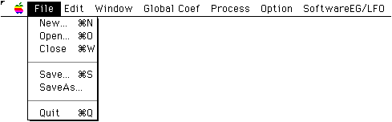
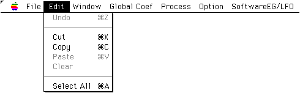
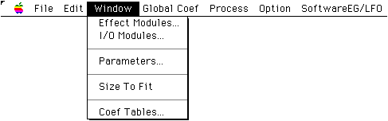
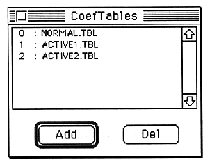
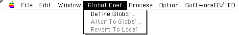
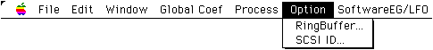
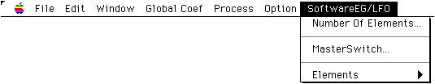

★SOUND Manual
★SCSP/DSPリンカユーザーズマニュアル/
★SOUND Manual
★SCSP/DSPリンカユーザーズマニュアル/
▲
戻る｜
進む▼
SCSP/DSPリンカユーザーズマニュアル
2.メニュー
■Fileメニュー

- New
- 新規のアルゴリズムエディット画面が開かれます。この項目を選択した直後にアルゴリズムの名前(リンク情報ファイル名)の入力が必要です。このファイル名には拡張子「.YLI」が自動的に付きます。
- Open
- リンク情報ファイル(YLI)に保存されているアルゴリズムを開きます。
この項目を選択した直後に標準ファイルオープンダイアログでリンク情報ファイルを選択します。アルゴリズムエディット画面が開いて、指定したファイルが読み込まれアルゴリズムが表示されます。
- Save
- 現在編集中のアルゴリズムがリンク情報ファイル(YLI)に保存されます。保存ファイル名は現在のアルゴリズムの名前となります。拡張実行形式ファイル(EXL)とバイナリ実行形式ファイル(EXB)もこのとき出力されます。
- SaveAs...
- 現在編集中のアルゴリズムをリンク情報ファイル(YLI)に保存します。
この項目を選択した直後に標準セーブダイアログで保存ファイル名を入力して指定します。拡張実行形式ファイル(EXL)とバイナリ実行形式ファイル(EXB)もこのとき出力されます。
- Close
- 現在編集中のアルゴリズムエディット画面が閉じられます。
- Quit
- リンカが終了します。
■Editメニュー

- Undo
- 直前に行われたエディットが取り消されます。
- Cut
- 選択されているモジュールや結線が削除されます。モジュールを削除した場合は接続されている結線も削除されます。削除されたモジュールとその情報はPasteバッファに保管されます。
- Copy
- 選択されているモジュールが、その情報と共にPasteバッファに保管されます。
- Paste
- CutまたはCopyによってPasteバッファに保管されているモジュールが、アルゴリズムエディット画面に表示されます。表示される位置はアルゴリズムエディット画面内で最後にクリックした位置です。
- Clear
- ？？？？？？？？？？？？？？？？？？？？
- SelectAll
- すべてのモジュールと結線が選択されます。
■Windowメニュー

- EffectModules
- Effectモジュール選択画面が開かれます。すでに開かれていて他の画面の後ろにある場合は、最前面に表示されます。
モジュールの配置方法は「4. アルゴリズムエディット」の「モジュールの配置」をご覧ください。
- I/OModules
- I/Oモジュール選択画面が開かれます。すでに開かれていて他の画面の後ろにある場合は、最前面に表示されます。
モジュールの配置方法は「4. アルゴリズムエディット」の「モジュールの配置」をご覧ください。
- Parameters
- 選択されているモジュールのパラメータエディットウインドウが開かれます。この項目を選択する代わりに、モジュールの選択欄をダブルクリックしても同じです。
- SizeToFit
- アルゴリズムエディット画面の内容を縮小して、アルゴリズム全体が見えるように表示します。縮小表示ではアルゴリズムのエディットはできません。また、はじめからすべてが表示されている場合は縮小されません。元の大きさに戻すときは、もう一度この項目を選択します。縮小表示中はこの項目の左にチェックマークが表示されます。
- CoefTables
- リンカ上で係数テーブルデータを取り扱うための「係数テーブルアロケータ」が開かれます。「係数テーブルアロケータ」で係数テーブルファイルを登録しておくと、実行形式ファイルに係数テーブルデータがリンクされ、係数テーブルが必要なEffectモジュールを使用できるようになります。
「係数テーブルアロケータ」は、次のとおりです。

- “ADD”ボタンで係数テーブルファイルを追加登録します。
“DEL”ボタンで選択状態の係数テーブルファイルを登録解除します。登録解除すると、それ以降の係数テーブルファイルの番号が詰められます。このため、モジュールの係数テーブル番号の指定も変更する必要がある場合がありますので、ご注意ください。
- 参考
- 係数テーブルファイルとは、A00Hの大きさのバイナリデータを収めたデータファイルで拡張子は「.TBL」です。ダイナミックフィルタモジュールがこれを必要としますが、この係数テーブルファイルを換えることにより、レゾナンス等のフィルタ特性を変更することができます。
■GlobalCoefメニュー

- DefineGlobal
- グローバル係数定義画面が開かれます。この画面がすでに開かれていて他の画面の後ろにある場合は最前面に表示されます。
- AlterToGlobal
- グローバル係数使用画面が開かれます。この項目は、パラメータエディットウインドウのグローバル化が可能な係数を選択しているときにだけ選択できます。原則として、単位が[%]で表示されているパラメータはグローバル化が可能です。
- RevertToLocal
- パラメータエディットウインドウで選択されているグローバル指定済の係数がローカルに戻されます。この項目は、パラメータエディットウインドウがアクティブなときにだけ選択できます。
■Processメニュー
-
- Link
- 現在のアルゴリズム構成における、プログラムのステップ数、内部メモリ使用量がハードウェアの限界を超えていないかなどのチェックが行われ、その結果が表示されます。
- Download
- メニュー項目“Link”で作られたデータが、実行形式の形でSCSPに転送されます。
■Optionメニュー

- RingBuffer
- 現在のアルゴリズムで使用するリングバッファのサイズを指定するダイアログが表示されます。
- SCSI ID
- SCSP/DSP/リンカでは、SCSIを使ってSCSPにデータ転送を行います。通常はリンカ起動時にSCSI IDが自動的に設定されますが、この項目を選択するとIDを決めるダイアログが表示され、IDを設定し直すことができます。
■SoftwareEG/LFOメニュー
- このメニューは、サウンドCPUでEG/LFO波形を生成する(SoftwareEG/LFO)ためのパラメータを設定するのに使用します。SoftwareEG/LFOは、サウンドCPUの負荷状況にも左右されますが、最大32機のEG/LFOエレメントをソフトウエアで仮想的に実現するものです。

- NumberOfElements
- この項目を選択すると「NumberOfElements」ダイアログ(後述)が開かれます。
- MasterSwitch
- この項目を選択すると「MasterSwitch」ダイアログ(後述)が開かれます。
- #0〜#31
- これらの項目のいずれかを選択すると、その番号に対応する「SoftwareEG/LFO Element」ウインドウ(後述)が開かれます。すでに開いている場合はアクティブ表示になります。
●ダイアログ/ウインドウ
「NumberOfElements」ダイアログ
- このダイアログによって、使用可能なSoftwareEG/LFOエレメントの最大数を設定します。このダイアログで設定値をNにすると、Element#0〜Element#(N-1)のN個のエレメントが有効になります。
また、ここで有効とされた範囲内のエレメントデータのみが実行ファイルにリンクされます。
「MasterSwitch」ダイアログ
- このダイアログ内のチェックボックスにより、各エレメントのON/OFFを設定します。チェックボックスの番号はSoftwareEG/LFOエレメント番号を表します。
「SoftwareEG/LFO Element」ウインドウ
- EG/LFO切り換えラジオボタン
そのエレメントがEGとして機能するか、LFOとして機能するかを設定します。選択されていない側の機能に関する表示は、すべてグレー表示になります。
- MIDI Ch
- EGを駆動用のNote情報を受信する、MIDI Chを設定します。
- Hold Time
- Hold時間を[ms]単位で設定します。
- Hold Level
- Hold期間中のEGレベルを設定します。
- Attack/Decay/Slope/Release Rate
- Attack/Decay/Slope/Releaseの各状態のRateを設定します。
- Attack/Decay/Slope/Release Level
- Attack/Decay/Slope/Releaseの各ポイントのレベルを設定します。
- グラフ
- 各EGパラメータの設定値からEGの経時変化を計算してグラフで表示します。以下の2つのラジオボタンの設定によって、時間軸の拡大/縮小や移動することができます。
- 時間軸倍率設定ラジオボタン
- EGグラフの時間軸を拡大/縮小します。
- 時間軸原点設定ラジオボタン
- EGグラフの時間軸の原点をEGグラフのいずれかのセグメントの先頭位置に移動します。
- Amplitude
- LFOの振幅を設定します。
- Frequency
- LFOの周波数を設定します。
▲
戻る｜
進む▼
★SOUND Manual
★SCSP/DSPリンカユーザーズマニュアル/
Copyright SEGA ENTERPRISES, LTD., 1997